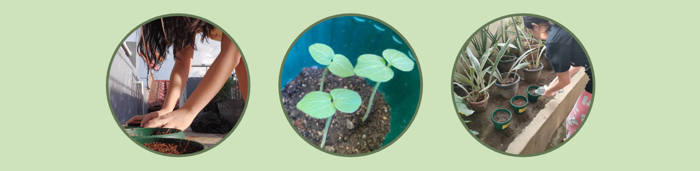
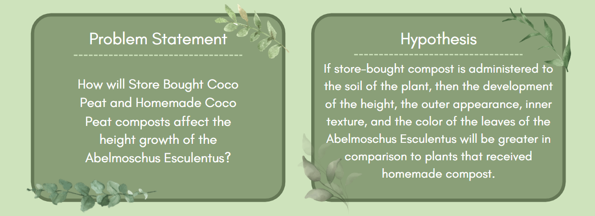
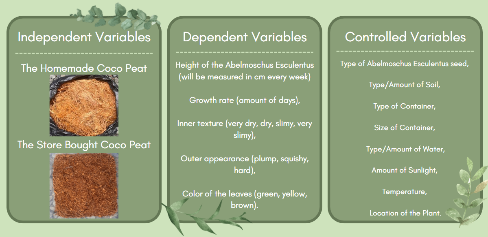
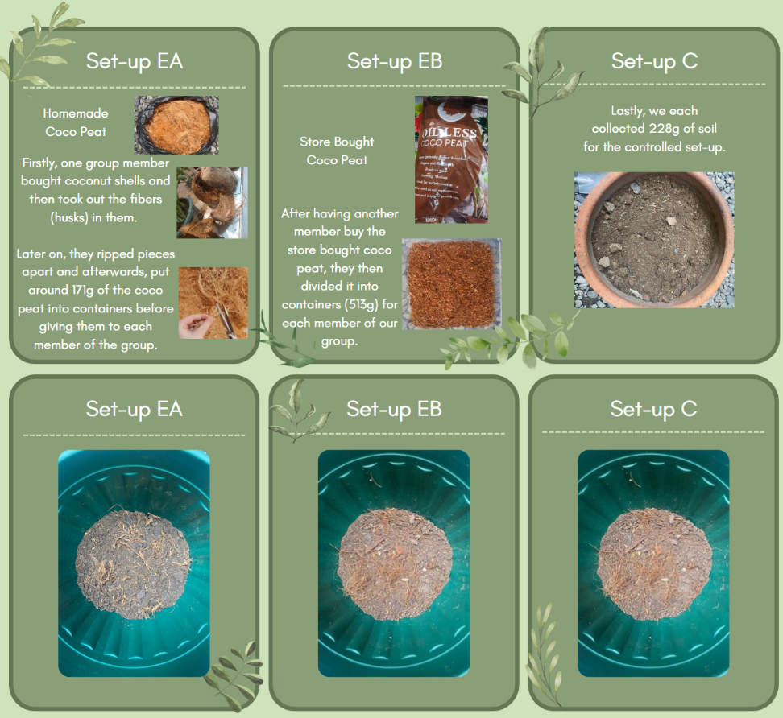
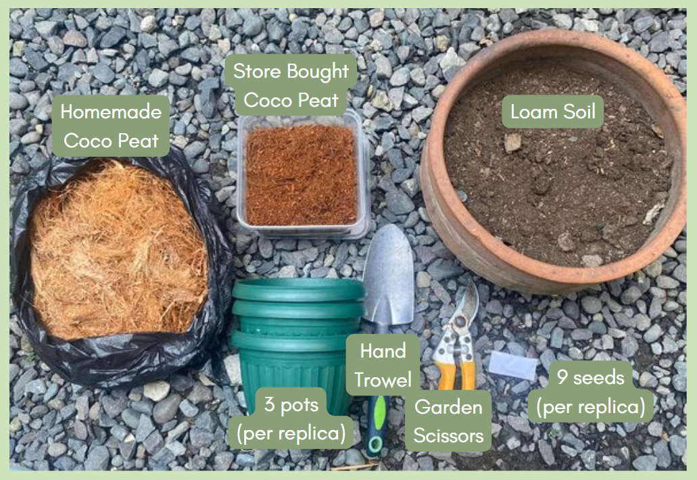

Home-Made and Store Bought Coco Peat as Composts for the Abelmoschus Esculentus

Background and Significance of the Study
As greenspaces in the modern day continue to enhance as new information and gardening techniques are discovered, this doesn’t prevent problems regarding plants to arise. One problem that most gardening enthusiasts face is the weakening of their plants. It seems that instead of the plants growing into such beautiful fauna, they grow as unhealthy plants. Hence, the idea to run an experiment on composts, material that helps improve the quality of the soil. Our desire is to test out different types of composts, specifically home-made and store-bought coco peat, to see which can help more with the growth of the Okra, or in its scientific name, the Abelmoschus Esculentus.

According to some research conducted, compost is a solution to this issue as the composts help in oxygenizing the soil. Using this information, this study seeks to find out which between organic coco peat and store-bought coco peat as compost is better to enhance the soil of the Abelmoschus Esculentus, as composts are found to help nutrients reach the plant.

Through our project, we may help provide the right information for the people of the community on which compost had the greatest impact on plant growth. Following that, we may effectively use the information we got for the partner institution to create productive activities that will assist in developing our community. It may have a large influence on the victims to implement this beneficial action.
Our PT group wants to work with Talikala Inc. to enlighten them about different types of compost and assist them in applying the usefulness of compost in their daily gardening life, as well as providing benefits to our plant, Abelmoschus Esculentus.
Planting could be one of Talikala's exciting activities for the victims they will assist. Planting can help the victims exercise, improve their mood, increase their self-esteem, and give them a break. Having said that, composting has numerous advantages. It reduces waste, which may help to reduce climate change, improves soil health and our health, suppresses plant diseases and pests, and so on.

After preparing and gathering our materials, our group decided to plant last November 4th, hoping to finish our planting process by December 30th, 2022. 